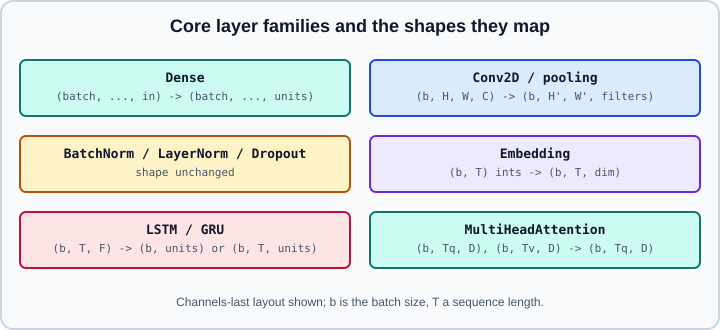

Core Keras Layers
|
This content was generated with the assistance of AI and should be verified against the official documentation before being relied on in production. |
Layers are the building blocks of every Keras model. This page surveys the ones used most often, with their input and output shapes, the arguments that matter, and the pitfalls that appear in practice, and then lists the naming and behaviour changes that Keras 3 introduced. Assembling layers into models is on Sequential & Functional Models, writing your own on Subclassing & Custom Layers, and preprocessing layers on Keras Preprocessing Layers. Full CNN, text and attention workflows are on Image Classification with CNNs, Text, RNNs & Embeddings and Attention & Transformers.
It targets Python 3.13 and TensorFlow 2.21 with Keras 3.15 (TensorFlow 2.22 is upcoming), and was checked against the official keras.io API reference on 2026-10-30. Examples were run on Python 3.13 with TensorFlow 2.21 and Keras 3.15 (CPU) on 2026-10-31. The theory is in Neural Network Fundamentals, Convolutional Neural Networks, Recurrent Networks & Sequences and Attention & Transformers; the PyTorch equivalents are Linear & Convolution Layers, Recurrent Layers and Embedding, Normalization, Dropout & Activations.

Conventions shared by all layers
-
The batch dimension is written
Nonein symbolic shapes, andkeras.Input(shape=...)takes the shape without it. -
The default image layout is channels-last,
(batch, height, width, channels). Thedata_formatargument ("channels_last"or"channels_first") and the global settingkeras.config.image_data_format()control it. Keep channels-last unless a backend or kernel requires otherwise. -
Activations can be given as strings (
"relu"), functions (keras.activations.gelu) orActivationlayers.activation=Noneleaves the output linear, which is what you want before a loss withfrom_logits=True. -
Common keyword arguments:
kernel_initializer,bias_initializer,kernel_regularizer,bias_regularizer,activity_regularizer,kernel_constraint,use_bias,name,dtype,trainable. -
Every layer has
weights,trainable_weights,non_trainable_weights,output(once connected),count_params()andget_config(). -
The default weight initializer for
Denseand convolution kernels is Glorot uniform and biases start at zero; override with"he_normal"for ReLU networks if you want to follow He initialization (see Training Deep Networks).
Dense
Dense(units) computes activation(inputs @ kernel + bias) on the last axis and leaves the other axes alone, so it works on (batch, features) and on (batch, time, features) alike.
import keras
from keras import layers, ops
dense = layers.Dense(
64,
activation="relu",
kernel_initializer="he_normal",
kernel_regularizer=keras.regularizers.L2(1e-4),
)
x = ops.ones((8, 20))
y = dense(x)
print(y.shape, [tuple(w.shape) for w in dense.weights]) # (8, 64) [(20, 64), (64,)]
seq = layers.Dense(10)(ops.ones((8, 5, 20))) # applied at each time step
print(seq.shape) # (8, 5, 10)Related core layers:
-
Flattencollapses all axes after the batch axis;Reshape(target_shape)reshapes without the batch axis;Permutereorders axes;RepeatVector(n)tiles a vector along a new time axis. -
Activation,ReLU,LeakyReLU,PReLU,ELU,Softmaxare layers, useful inside Sequential models and when the activation has parameters. -
Lambda(fn)wraps a function but is awkward to serialize; prefer a small custom layer.Identityis a no-op, useful as a placeholder. -
EinsumDenseapplies aneinsumequation, which expresses per-head projections in transformer code in one layer. -
In Keras 3.15 a built
Denselayer supports low-rank adaptation and quantization:dense.enable_lora(rank)freezes the kernel and adds trainablelora_kernel_aandlora_kernel_bweights, anddense.quantize("int8")replaces the kernel with an int8 kernel plus akernel_scale; see Quantization & Model Optimization.
Convolution layers
Conv1D, Conv2D and Conv3D slide learned filters over the spatial axes. For Conv2D the input is (batch, H, W, C) and the output is (batch, H', W', filters).
conv = layers.Conv2D(
filters=32,
kernel_size=3,
strides=1,
padding="same", # "valid" (default) or "same"
activation="relu",
)
y = conv(ops.ones((4, 64, 64, 3)))
print(y.shape) # (4, 64, 64, 32)
valid = layers.Conv2D(32, 3)(ops.ones((4, 64, 64, 3)))
print(valid.shape) # (4, 62, 62, 32)
strided = layers.Conv2D(32, 3, strides=2, padding="same")(ops.ones((4, 64, 64, 3)))
print(strided.shape) # (4, 32, 32, 32)The output size is \(\lfloor (n - k + 2p)/s \rfloor + 1\) for "valid" (with \(p = 0\)) and \(\lceil n / s \rceil\) for "same". Other convolution layers:
| Layer | Use |
|---|---|
|
Depthwise followed by pointwise convolution, far fewer parameters (MobileNet style) |
|
Learned upsampling in decoders and segmentation heads |
|
Sequences and audio; input |
|
Wider receptive field without more parameters; combining it with strides greater than 1 is not supported by every backend |
|
Grouped convolutions; |
Pitfalls: "same" padding with stride 2 pads asymmetrically in TensorFlow, which matters when comparing against PyTorch’s symmetric integer padding; a missing channel axis on grayscale images (use (28, 28, 1), not (28, 28)); and forgetting that the default padding="valid" shrinks the feature map.
Pooling
x = ops.ones((4, 32, 32, 16))
print(layers.MaxPooling2D(pool_size=2)(x).shape) # (4, 16, 16, 16)
print(layers.AveragePooling2D(pool_size=2)(x).shape) # (4, 16, 16, 16)
print(layers.GlobalAveragePooling2D()(x).shape) # (4, 16)
print(layers.GlobalAveragePooling2D(keepdims=True)(x).shape) # (4, 1, 1, 16)
print(layers.GlobalMaxPooling2D()(x).shape) # (4, 16)strides defaults to pool_size, so a pooling window does not overlap unless you say so. Global pooling replaces Flatten in modern CNN heads: it removes the dependence on image size and the huge dense layer that comes with flattening.
Normalization
bn = layers.BatchNormalization(axis=-1, momentum=0.99, epsilon=1e-3)
y_train = bn(ops.ones((8, 10)), training=True) # uses batch statistics
y_infer = bn(ops.ones((8, 10)), training=False) # uses moving averages
ln = layers.LayerNormalization(axis=-1) # statistics per sample
gn = layers.GroupNormalization(groups=8) # channel groups, batch-size independent-
BatchNormalizationkeeps four weights per feature:gammaandbeta(trainable) and a moving mean and variance (non-trainable, updated in training). Moving averages are updated only whentraining=True. -
Setting
bn.trainable = Falsemakes the layer run in inference mode, using the moving statistics, and freezesgammaandbeta. This is the behaviour TensorFlow 2 chose for fine-tuning and is relied on in Transfer Learning & Fine-Tuning. Compile again after changingtrainable. -
LayerNormalizationis the default in transformers;GroupNormalizationis used with small batches;UnitNormalizationscales vectors to unit length;RMSNormalizationis available in recent Keras 3 releases and is not present in Keras 2. -
Place normalization consistently (before or after the activation) and keep the batch size above a handful when using
BatchNormalization, or the statistics become noisy.
Dropout and noise
drop = layers.Dropout(rate=0.3) # rate is the fraction DROPPED
y = drop(ops.ones((4, 10)), training=True) # kept units are scaled by 1/(1-rate)
sd = layers.SpatialDropout2D(0.2) # drops whole feature maps
noise = layers.GaussianNoise(0.1) # active only in trainingDropout, SpatialDropout1D/2D/3D, AlphaDropout, GaussianNoise, GaussianDropout and ActivityRegularization are active only during training; Keras supplies training when you use fit. Dropout is inverted: surviving activations are scaled at training time so nothing changes at inference. Pass seed= or use a keras.random.SeedGenerator for reproducible masks; see Generalization & Regularization.
Embedding
Embedding(input_dim, output_dim) is a trainable lookup table that maps integer ids to vectors. The input must be integers from 0 up to, but excluding, input_dim.
emb = layers.Embedding(input_dim=10_000, output_dim=64, mask_zero=True)
ids = ops.convert_to_tensor([[5, 7, 0, 0], [1, 2, 3, 0]])
vectors = emb(ids)
print(vectors.shape) # (2, 4, 64)
mask = emb.compute_mask(ids) # False where the id is 0With mask_zero=True, id 0 is reserved for padding, so input_dim must be the vocabulary size plus one, and downstream recurrent and attention layers can skip padded steps. Pretrained vectors are loaded through embeddings_initializer=keras.initializers.Constant(matrix) and frozen with trainable=False. The surrounding text pipeline is on Text, RNNs & Embeddings and the idea in Embeddings & Representation Learning.
Recurrent layers
SimpleRNN, LSTM and GRU process (batch, time, features) inputs. By default they return only the last output; set return_sequences=True to get one output per step, which is needed to stack recurrent layers.
x = ops.ones((8, 20, 16))
print(layers.LSTM(32)(x).shape) # (8, 32)
print(layers.LSTM(32, return_sequences=True)(x).shape) # (8, 20, 32)
out, h, c = layers.LSTM(32, return_state=True)(x) # last output, h, c
print(out.shape, h.shape, c.shape) # (8, 32) (8, 32) (8, 32)
bi = layers.Bidirectional(layers.GRU(32, return_sequences=True))
print(bi(x).shape) # (8, 20, 64)
model = keras.Sequential([
keras.Input(shape=(20, 16)),
layers.LSTM(64, return_sequences=True),
layers.LSTM(32),
layers.Dense(1),
])-
LSTMandGRUacceptdropout(inputs) andrecurrent_dropout(state); the latter disables the fastest GPU kernel on some backends. -
On the TensorFlow backend the cuDNN kernel is used when the layer has default activations and
recurrent_dropout=0, which is much faster on a GPU. Changing these arguments silently selects a slower generic implementation. -
RNN(cell)runs a custom cell (a layer withstate_sizeand acall(inputs, states));ConvLSTM1D/2D/3Dcombine convolution and recurrence;TimeDistributed(layer)applies a layer to each time slice. -
Masks produced by
Embedding(mask_zero=True)orMaskingmake recurrent layers ignore padded steps. -
Use
stateful=Trueonly with a fixed batch size and callreset_states()between sequences.
Attention
MultiHeadAttention(num_heads, key_dim) projects queries, keys and values into several heads, applies scaled dot-product attention and merges the heads. The call takes query, value and optionally key (defaulting to value).
mha = layers.MultiHeadAttention(num_heads=4, key_dim=16)
q = ops.ones((2, 10, 64)) # (batch, target length, dim)
v = ops.ones((2, 12, 64)) # (batch, source length, dim)
cross = mha(query=q, value=v) # (2, 10, 64)
self_out, scores = mha(q, q, use_causal_mask=True,
return_attention_scores=True)
print(cross.shape, scores.shape) # scores: (2, 4, 10, 10)use_causal_mask=True blocks attention to later positions in decoder self-attention; attention_mask supplies an arbitrary boolean mask; the output dimension defaults to the query’s last dimension unless output_shape is set. The simpler Attention (dot-product) and AdditiveAttention (Bahdanau) layers have no learned projections. Position information is not added by these layers, so transformers add positional embeddings separately; full blocks are on Attention & Transformers.
Merging layers and utilities
-
Add,Subtract,Multiply,Average,Maximum,Minimum,Concatenate,Dotcombine a list of tensors; they are the joints of branched Functional models. -
Cropping2D,ZeroPadding2D,UpSampling2Dchange spatial size;ResizingandRescalingbelong to preprocessing. -
InputandInputLayerdeclare model inputs;StackedRNNCellsstacks recurrent cells.
Keras 3 naming and behaviour changes
The keras package is a rewrite with a multi-backend core. Compared with the Keras 2 tf.keras API that older books and tutorials describe, the changes below matter when you read or port layer code. The full checklist is on Migrating from Keras 2 to Keras 3.
| Older Keras 2 code | Keras 3 | Notes |
|---|---|---|
|
|
Layers run on TensorFlow, JAX and PyTorch; custom layers must use |
|
|
The older argument is discouraged and triggers a warning |
|
|
Weights are backend-neutral wrappers; read with |
|
keyword form |
Keras 3 uses keyword arguments |
SavedModel as the default saved format |
|
Covered on the saving page |
|
|
Preprocessing layers moved to |
Ragged and sparse inputs everywhere |
Supported mainly on the TensorFlow backend |
Check backend support before relying on them |
|
|
Safe mode blocks arbitrary code in files |
Other practical differences: BatchNormalization and other stateful layers behave the same, but the optimizer API is new (see Optimizers & Learning-Rate Schedules); model.summary() prints a different table; keras.layers.Layer.add_metric from Keras 2 is gone in favour of metric objects. Whether a particular Keras 2 layer argument still exists is best confirmed against https://keras.io/api/layers/ for the installed version.
Choosing layers: a short guide
| Data | Typical stack |
|---|---|
Tabular vectors |
|
Images |
|
Token ids |
|
Long sequences, translation |
|
Common pitfalls
-
Softmax in the last layer together with
from_logits=Truein the loss, which applies softmax twice. -
Embedding.input_dimtoo small, producing out-of-range lookups; ids at or aboveinput_dimare not an error on every backend. -
Using
Flattenafter a large feature map and ending with millions of dense parameters. -
Expecting
Dropoutto act inpredict; it is off unless you passtraining=True. -
Treating
BatchNormalization.trainable = Falseas only freezing the weights; it also changes the layer to inference mode. -
Mixing channels-first data with a channels-last model.
References
-
Layers API overview: https://keras.io/api/layers/
-
Core layers (Dense, Embedding): https://keras.io/api/layers/core_layers/
-
Convolution layers: https://keras.io/api/layers/convolution_layers/
-
Pooling layers: https://keras.io/api/layers/pooling_layers/
-
Recurrent layers: https://keras.io/api/layers/recurrent_layers/
-
Normalization layers: https://keras.io/api/layers/normalization_layers/
-
Regularization layers: https://keras.io/api/layers/regularization_layers/
-
Attention layers: https://keras.io/api/layers/attention_layers/
-
Keras 3 announcement: https://keras.io/keras_3/
-
TensorFlow Keras guide: https://www.tensorflow.org/guide/keras